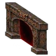
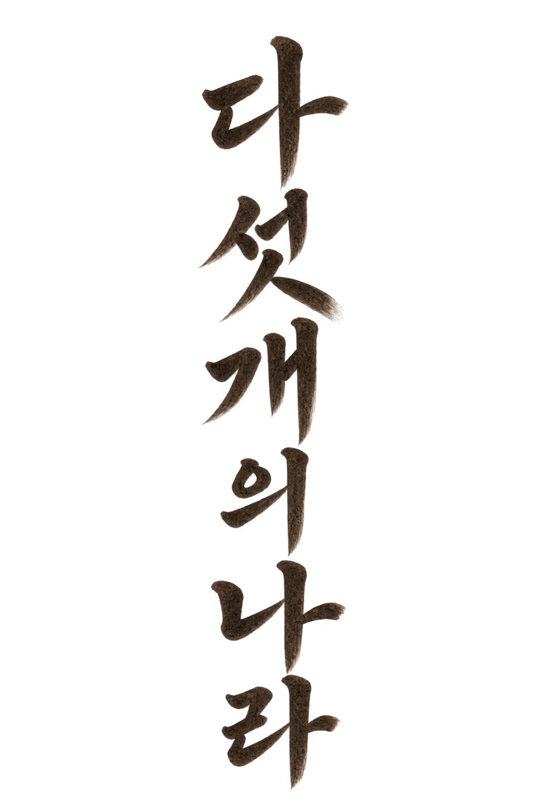

아이
200 / 200길을 걷는 중
몽유도원밤
0%지옥문까지 100%


동료 1 / 50
미니맵 아군 적
캐릭터
70엽전 / 100
필살기
휴대폰을 가로로 돌려 주세요.
왼손은 이동, 오른손은 동료와 기술.



시간 충전 · 처치 보너스 · 엽전을 써서 동료와 기술을 사용해요.
이동 A D · 일시정지 SPACE가로 화면에서 더 넓게 볼 수 있어요.누렁소는 앞에서 막고
달토끼는 뒤에서 쏩니다.
돌진은 발구름으로 끊고
회복술은 부적으로 끊어요.
시간 충전과 처치로 엽전을 모아
동료를 부르고 기술을 써요.